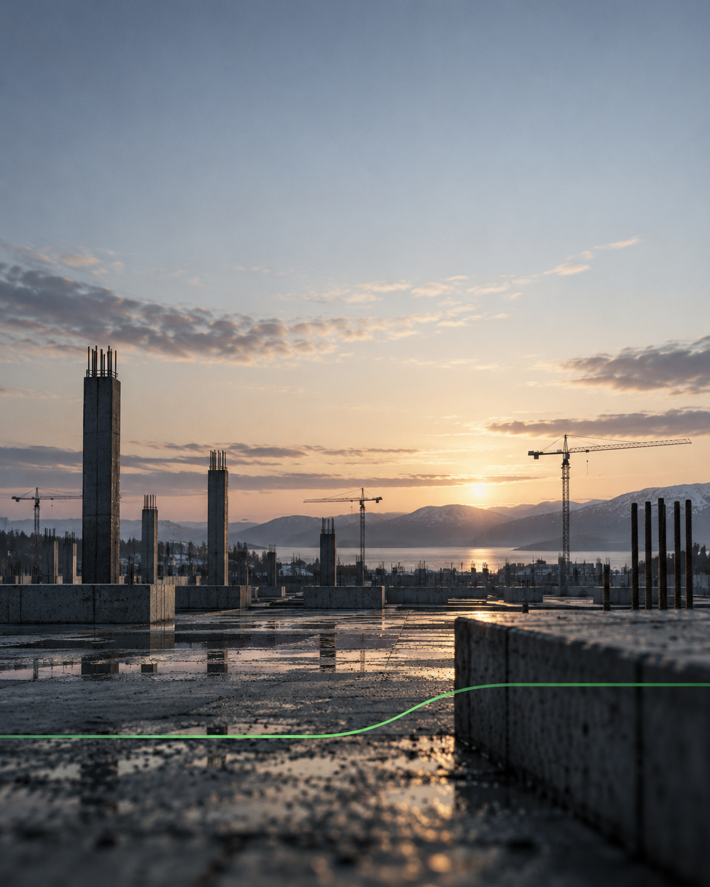
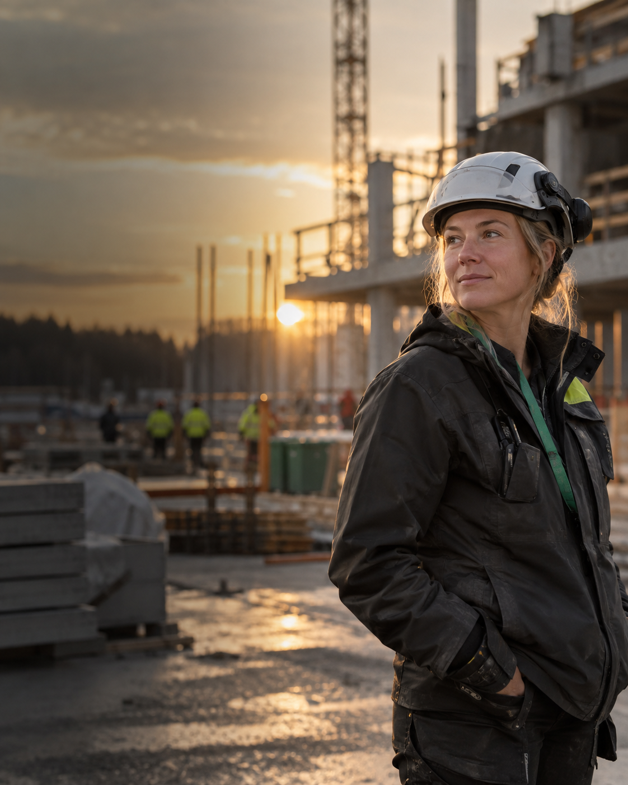
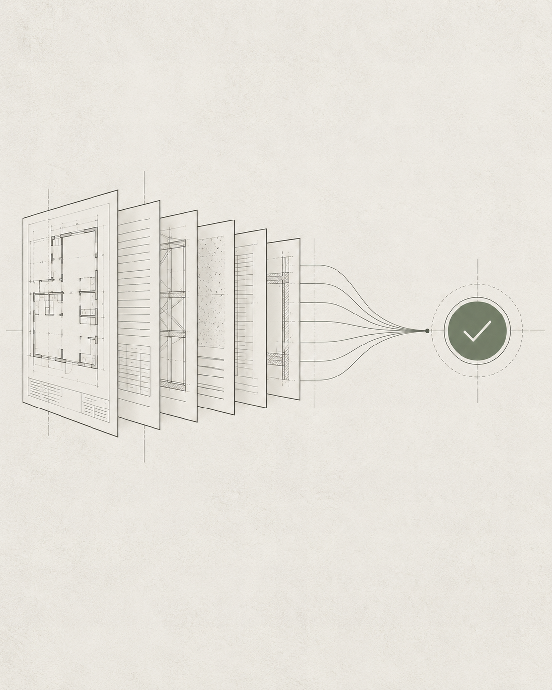

Sample content drop
Brickanta visits society builders across Sweden every week, and it becomes photos and text. Here is what it could become instead: three AI video concepts, three posts, and the one-person engine to run them.
Three 8-second concepts, generated with Veo 3.1 / Google Flow. Prompts included, so you can see exactly how each was made. These are raw first drafts, straight out of the model, not edited or graded. The point is the idea and the speed, not the finish.
The margin is set in the bid. One estimator, one decision, at dawn.
Cinematic 8s. Early morning Nordic construction site before work begins, golden light, cool shadows, light mist. A single estimator in everyday clothes at the edge of the empty foundation, tablet in hand, calm focus. Slow dolly push-in over the shoulder, shallow DOF, 35mm, film grain. They nod once, decision made. Audio: birds, wind, one soft synth swell. No text, no vocals.
The paperwork clears, the builder walks back into daylight and the site.
Cinematic 8s. Macro on a tall stack of tender documents in a site office, warm light, dust motes. Rack focus, slow crane up as the builder rises and turns toward a bright doorway onto an active site. One continuous move from dim paperwork into daylight. 35mm, shallow DOF, no cuts. Audio: paper, chair, widening outdoor ambience, one rising synth note. No text, no VO.
Golden-hour payoff: a finished community space, alive with people.
Cinematic 8s, golden hour. A newly finished community sports field in a Nordic neighbourhood, children playing football, families walking, life in motion. Slow aerial drone descent from the rooftops to human height. Warm sun, long shadows, subtle flare. Natural film look, 35mm, light grain. Audio: distant laughter, a kicked ball, warm pad resolving. No text, no narration.
Three concepts grounded in Brickanta's own material: the cost-of-standing-still report, a customer line, and the agent guide. Image beds generated in ChatGPT; final headline and Swedish copy added in post, with Sebastian on the Swedish.

Standing still has a price. $126B for European construction this decade, per McKinsey. We reached the same place from the Swedish angle.

Customer story. "With Brickanta, we can more or less double our capacity in manpower." Cut as a vertical quote card.

What an agent actually does. Everyone in construction is told to do something about AI. Few are told what that means.
What you get, and what it replaces.
What you get: roadshows and customer visits become a steady stream of films, not a few photos; social stops being text posts; paid backs the pieces that land; one person owns video, short-form, social, paid and tracking in English, with the Head of Marketing owning the Swedish voice.
What it replaces: a video producer, a paid media specialist, and an editor. Three hires or an agency retainer in Stockholm. This is one person, and AI lifts the output.
What I would need: a small AI image/video generation budget, a video editor's time for finishing, and a test ad budget.
The first 30 days: turn existing roadshow footage into a batch of finished short films, stand up the posting and content system, and run a small paid test behind the best one; real output in month one, then decide together what scales. No long ramp. Backed by 120,000+ lifecycle emails as a solo marketer and paid across Meta, TikTok, Reddit and Apple Search Ads with server-side attribution.